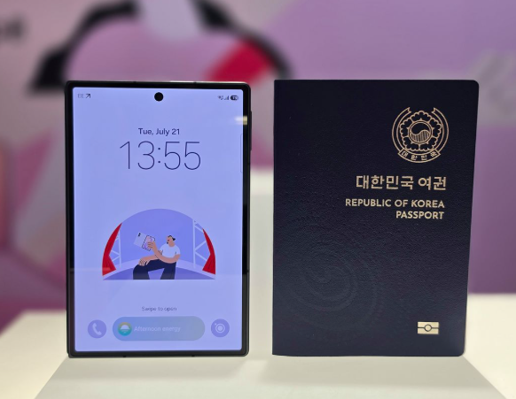

삼성, 차세대 폴더블 공개… 4대3 화면비로 몰입감 강화
입력: 2026.07.23

삼성전자가 새로운 폼팩터를 적용한 차세대 폴더블폰 라인업을 공개했다. 접었을 때는 한 손에 안정적으로 들어오는 휴대성을, 펼쳤을 때는 상하 여백을 줄인 4대3 비율의 몰입형 화면을 강조했다.
새로운 폼팩터 공개
삼성전자는 22일 현지시간 영국 런던 올드 빌링스게이트에서 열린 ‘갤럭시 언팩 2026’ 행사에서 차세대 폴더블폰 라인업을 선보였다. 이번 제품은 기존 폴더블폰과 차별화된 화면 비율과 사용 경험을 앞세운 것이 특징이다.
접었을 때는 여권처럼 한 손에 들어오는 안정적인 크기감을 제공하고, 펼치면 보다 넓고 균형 잡힌 화면을 활용할 수 있도록 설계됐다. 휴대성과 대화면 활용성을 동시에 강화하려는 방향이 반영됐다.
4대3 화면비로 몰입감 강화
새로운 폴더블폰은 펼쳤을 때 상하 여백을 줄인 4대3 화면비를 적용했다. 영상 감상과 문서 확인, 웹 탐색, 멀티태스킹 등 다양한 작업에서 화면 공간을 효율적으로 사용할 수 있도록 한 구성이다.
특히 넓어진 화면은 여러 앱을 동시에 실행하거나 사진과 문서를 함께 확인하는 생산성 중심의 사용 환경에서도 활용도가 높을 것으로 예상된다.
휴대성과 대화면 경험 모두 강조
폴더블폰은 접었을 때의 휴대성과 펼쳤을 때의 대화면 경험을 모두 만족시키는 것이 핵심이다. 삼성전자는 이번 제품을 통해 한 손 사용의 안정감과 몰입형 화면을 함께 제공하는 방향을 제시했다.
사진에서도 제품을 접었을 때 일반적인 여권과 비슷한 세로형 크기와 형태를 확인할 수 있다. 이는 얇기보다 휴대 시 손에 잡히는 크기와 비율을 직관적으로 보여주기 위한 비교로 볼 수 있다.
폴더블 시장 경쟁 본격화
글로벌 스마트폰 업체들이 새로운 형태의 폴더블폰 출시를 준비하면서 시장 경쟁도 더욱 치열해질 전망이다. 삼성전자는 경쟁 제품보다 앞서 새로운 화면 비율과 폼팩터를 선보이며 폴더블 시장에서의 주도권을 강화하려는 모습이다.
앞으로 폴더블폰 시장에서는 단순히 화면을 접는 기술을 넘어 휴대성, 화면 비율, 멀티태스킹, 사용자 경험이 제품 경쟁력을 좌우할 것으로 보인다.